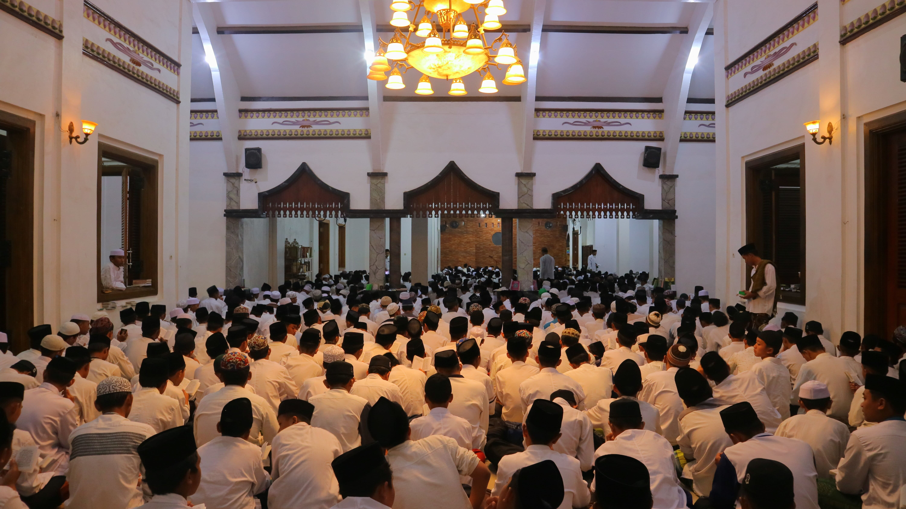
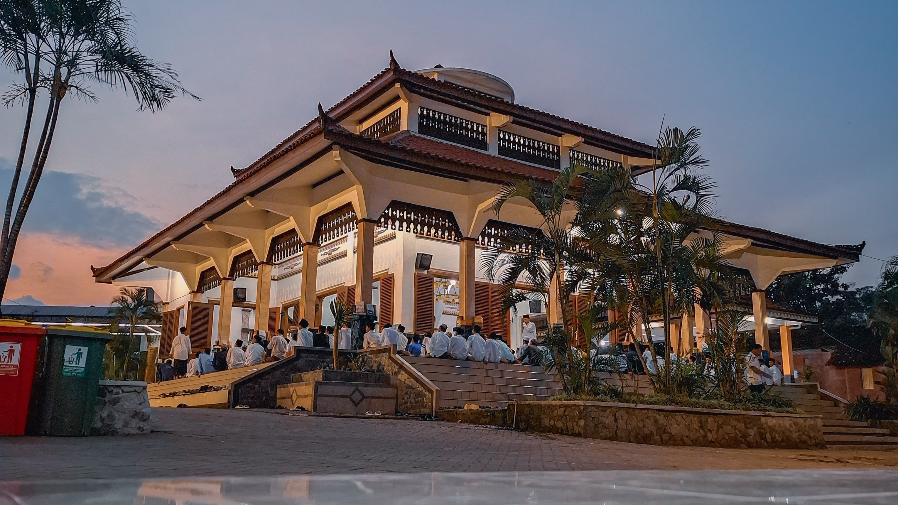
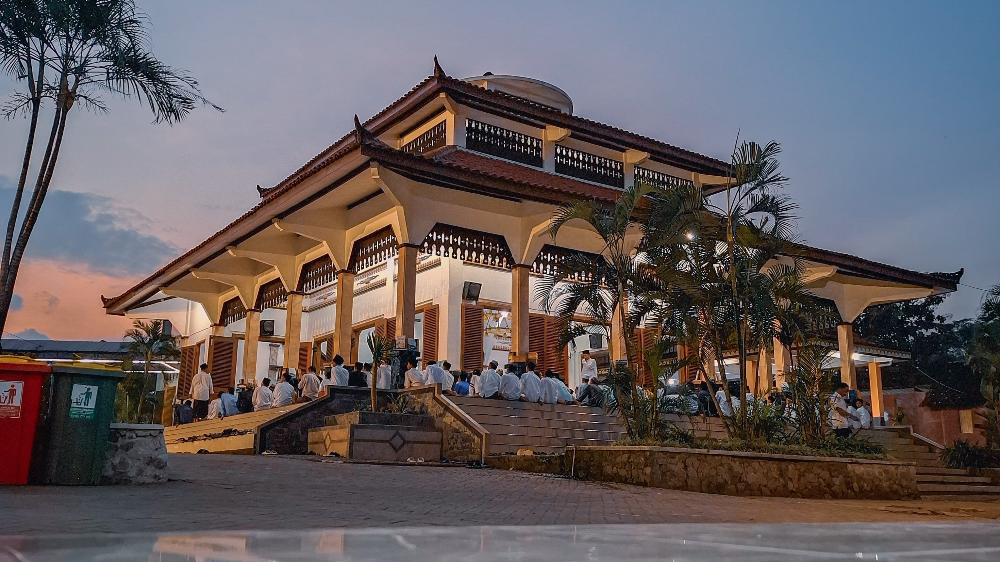

pondok pesantren alberr
pondok pesantren alberrInformasi
Pondok Pesantren ALBERR

Kenapa Memilih Pondok Pesantren ALBERR
Pondok Pesantren Alberr adalah lembaga pendidikan Islam yang berfokus pada pengembangan karakter dan pengetahuan agama. Kami menyediakan lingkungan yang kondusif untuk belajar dan tumbuh, dengan berbagai kegiatan harian yang dirancang untuk memperkaya pengalaman santri.
- Pusat Pendidikan Akhlaq Dan Ilmu Pengetahuan
- Intregasi Ilmu Agama Dan Umum
- Pendidikan Salaf Dan Modern Yang Terpadu
- Pembelajaran Siswa Aktif Dengan Prestasi
- Program Cepat Belajar Kitab Kuning "Amtsilati"
- Pesantren Yang Asri Dan Menjunjung Tinggi Kebersihan
- Fasilitas Lengkap Dan Terawat


 
